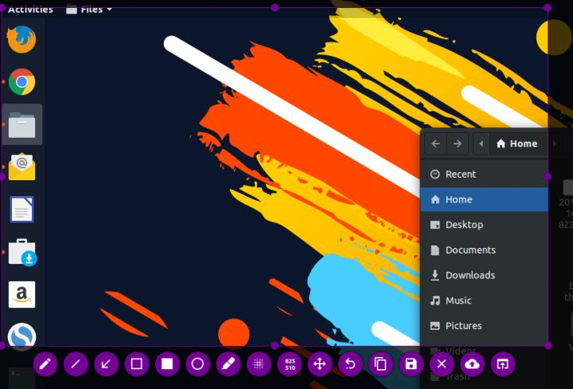
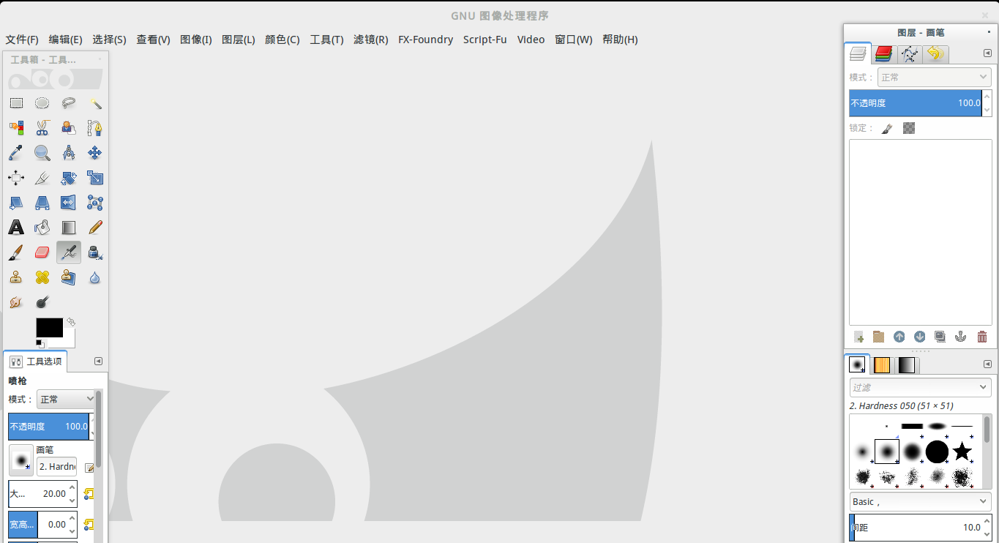

Ubuntu常用软件
Ubuntu常用软件
1、[ uGet ] Ubuntu 中使用的下载工具
uget 很好用 安装命令如下
1 | sudo add-apt-repository ppa:plushuang-tw/uget-stable |
2、[ indicator-sysmonitor ] Ubuntu 使用的资源监视器
To install the AppIndicator via PPA:
1 | sudo add-apt-repository ppa:fossfreedom/indicator-sysmonitor |
Search in the dash for “indicator-sysmonitor” to run
3、[ Tweak-Tool ] Ubuntu 系统自带的桌面优化工具
安装 Tweak-Tool
sudo apt install gnome-tweak-tool
从Ubuntu存储库安装扩展
Ubuntu 18.04版本附带了一些扩展，作为其软件包存储库的一部分。可以通过执行以下linux命令来安装这些扩展：
$ sudo apt install gnome-shell-extensions
安装后，重新登录到您的Ubuntu系统并使用Tweak Tool启用任何所需的扩展。
从Gnome.org安装扩展
安装Firefox附加组件
打开Firefox浏览器并访问firefox插件页面以进行gnome shell集成。准备好后，单击+ Add to Firefox。
点击Add添加GNOME shell集成。
安装Host Connector
下一步是安装Gnome shell主机连接器。打开终端并输入：
$ sudo apt install chrome-gnome-shell
无法安装主机连接器将导致错误消息：
1 | 虽然GNOME Shell集成扩展正在运行，但未检测到本机主机连接器。有关安装连接器的说明，请参阅文档 |
高质量4k壁纸
https://wallpaperaccess.com/4k-nature
4、[ Flameshot ] 屏幕截图和编辑
在 Linux 中使用 flameshot

功能概述：
注释 (高亮、标示、添加文本、框选)
图片模糊
图片裁剪
上传到 Imgur
用另一个应用打开截图
Flameshot 在去年发布到 GitHub，并成为一个引人注目的工具。
如果你需要的是一个能够用于标注、模糊、上传到 imgur 的新式截图工具，那么 Flameshot 是一个好的选择。
下面将会介绍如何安装 Flameshot 并根据你的偏好进行配置。
如果你用的是 Ubuntu，那么只需要在 Ubuntu 软件中心上搜索，就可以找到 Flameshot 进而完成安装了。要是你想使用终端来安装，可以执行以下命令：
1 | sudo apt install flameshot |
如果你在安装过程中遇到问题，可以按照官方的安装说明进行操作。安装完成后，你还需要进行配置。尽管可以通过搜索来随时启动 Flameshot，但如果想使用 PrtSc 键触发启动，则需要指定对应的键盘快捷键。以下是相关配置步骤：
进入系统设置中的“键盘设置”
页面中会列出所有现有的键盘快捷键，拉到底部就会看见一个 “+” 按钮
点击 “+” 按钮添加自定义快捷键并输入以下两个字段：
“名称”： 任意名称均可。
“命令”： /usr/bin/flameshot gui
最后将这个快捷操作绑定到 PrtSc 键上，可能会提示与系统的截图功能相冲突，但可以忽略掉这个警告。
5、[ Synergy ] 键鼠共享同步工具
Synergy是一款开放源代码软件，能让用户通过网络在视线范围内使用一套键盘鼠标控制多台电脑。因为Synergy不能传输视频，所以每台电脑都需要连接显示器。除了在多台计算机间共享键盘鼠标，Synergy还能共享剪贴板。Synergy是跨平台的软件，可以在Windows，Linux和Mac OS X之间共享键盘和鼠标。
Synergy允许你轻松地在你办公桌上多台计算机之间共享你的鼠标和键盘。你只要将鼠标（指针）从一台计算机的屏幕边缘移出到另 一个屏幕就行了。
Ubuntu 安装
1 | sudo apt-get install synergy |
1 | //解决 system tray is unavailable, don't close your window 问题 |
最近又给 Windows 系统安装了 synergy ，遇到了 windows 系统与 Ubuntu 系统无法链接的问题，查看 log 发现是因为无法通过加密，因此，在 Ubuntu 系统里把 synergy 的设置里的使用 ssh 加密选项关掉就可以链接了。
注册码
1 | 7B76313B70726F3BE5BDAC20E585B33B313B73796E313333323040676D61696C2E636F6D3B3B3B7D |
6、[ Terminator ] 分屏终端
5分钟入手Terminator
https://www.jianshu.com/p/cee2de32ca28
7、[ GIMP及其插件 ] Ubuntu安装图片处理工具
1. GIMP
linux上很多工程使用的专业软件的缺失真心是硬伤, 阻挡了一大批的喜爱者. 虽然Linux的发行版桌面做的越来越炫，基础的软件也都能找的替代品，其的开源性给软件的发展带来了很大的助力。但是解决专业软件的移植目前仍没有大规模的进行，很多软件只有win和mac版的.
比如对于图像处理软件，在Win上，Photoshop是不二的选择，但是做为一位程序员，Linux是我的不二选择，但是鱼和熊掌真得不可兼得吗?
不见得，因为有wine–牛B中的战斗机，其对于部分的DLL进行了重写，进而在linux下模拟出了windows的应用运行环境，让我们使用很多优秀非跨平台软件成了可能，真可谓条条大路通罗马.
但linux对于程序员来说是最为优秀的。真心的希望在今后的程序员时光中，能为开源的环境出一份力。
GIMP是开源的图像处理软件，在wiki上有详细的http://zh.wikipedia.org/wiki/Gimp。

2. 安装GIMP
目前的GIMP中都已经包含了GIMP的源, 我们可以直接使用apt-get安装
2.1 安装GIMP
1 | sudo apt-get install gimp |
2.2 安装插件
GIMP Plugin Registry 包涵众多插件
1 | sudo apt-get install gimp-plugin-registry gimp-data-extras |
当然也可以按照需要安装其他一些附属的包
| 插件 | 描述 |
|---|---|
| gimp-data-extras | 刷子/调色板/渐变色的GIMP插件集 |
| gimp-gmic | 用于《GREYC魔术图像转换软件》的GIMP插件 |
| gimp-gutenprint | GIMP的打印插件 |
| gimp-plugin-registry | GIMP的可选扩展库 |
| gvfs-backends | 用户空间虚拟文件系统-后端 |
| xcftools | 命令行工具，用于XCF文件的额外数据 |
| gimp-gap | gif动态图制作插件 |
| mathmap | 制作德罗斯特效应插件 |
[ wine ]
安装后 输入文本框无法显示 解决方法
1 | winetricks riched20 |
网络差时可以直接下载文件放入系统目录中
- Post Title: Ubuntu常用软件
- Post Author: Geng Yuchao
- Post Link: https://github.com/gengyuchao/gengyuchao.github.io/2020/08/11/Ubuntu系统/Ubuntu常用软件/
- Copyright Notice: All articles in this blog are licensed under CC BY-NC-SA 4.0 unless stating additionally.